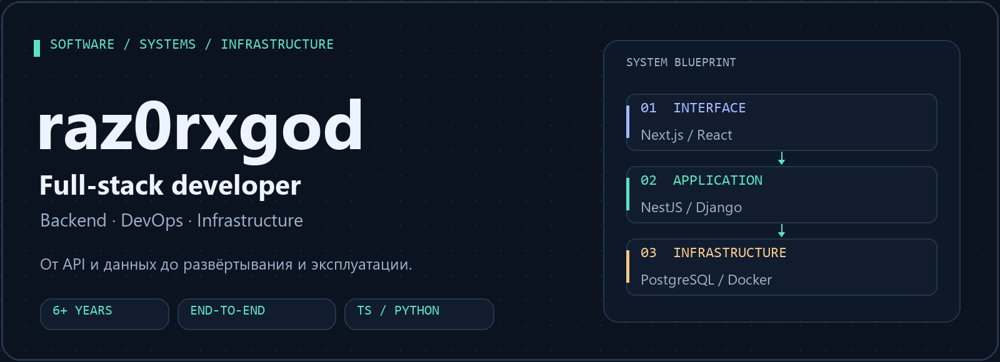
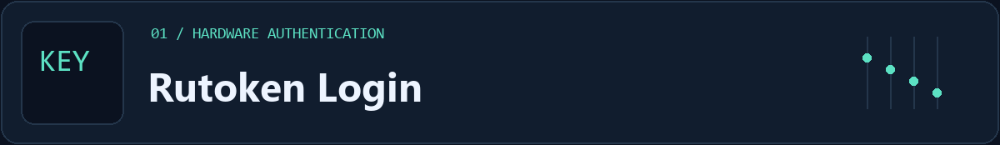
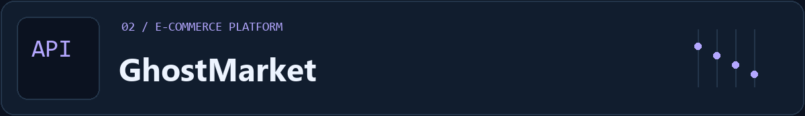
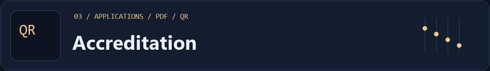
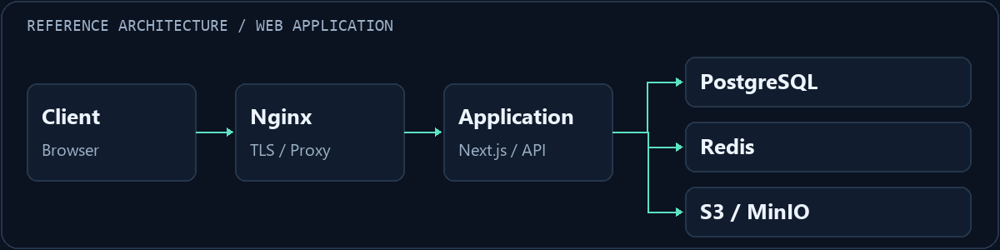

Создаю веб-приложения и инфраструктуру, на которой они работают.
TypeScript / Python · API и базы данных · Linux / Windows Server
Проекты / Стек / Подход / Написать в Telegram ↗
Разработка с пониманием эксплуатации
Я full-stack разработчик с 6+ годами практического опыта в разработке, автоматизации и эксплуатации IT-систем. Работаю на стыке backend, frontend и инфраструктуры: проектирую API и структуру данных, создаю интерфейсы, настраиваю окружение и развёртывание.
Мне интересны задачи, где нужно разобраться в системе целиком: от авторизации и бизнес-логики до reverse proxy, диагностики и поддержки legacy-кода.
| Разработка | Данные | Эксплуатация |
|---|
| REST API, интерфейсы, аутентификация, роли и интеграции |
Схемы БД, миграции, индексы, транзакции и оптимизация SQL |
Docker, Nginx, HTTPS, автоматизация и диагностика |
Избранные проекты

Беспарольный вход в Django с USB-токеном Рутокен. Интеграция аппаратной криптографии в стандартный механизм аутентификации Django.
- Challenge/response: носитель подписывает запрос, сервер проверяет подпись по сертификату X.509.
- Закрытый ключ остаётся на устройстве; взаимодействие с ним идёт через браузерный плагин.
- В README проекта описана проверка на реальном устройстве; протокол и нюансы интеграции разобраны в документации.
Python Django X.509 RSA / ECDSA Redis
Код ↗ · Протокол и интеграция

Интернет-магазин с каталогом, заказами и административной панелью. Проект объединяет клиентскую часть, backend и инфраструктуру развёртывания.
- Каталог с категориями, брендами и атрибутами; корзина, избранное и оформление заказов.
- JWT-аутентификация с refresh-токенами и ролями ADMIN / MANAGER / EDITOR / CUSTOMER.
- Загрузка и обработка изображений через Multer + Sharp; PostgreSQL, Redis и S3-совместимое хранилище.
Next.js React NestJS Prisma PostgreSQL Docker
Код ↗ · Технический статус · Развёртывание

Портал электронной аккредитации. Работа с групповыми заявками, документами участников и проверкой аккредитационных карт на пунктах пропуска.
- Личный кабинет заявителя и рассмотрение заявок сотрудниками с разными ролями.
- Чат заявителя с администрацией через REST / WebSocket.
- Именные PDF-карты с QR-кодом, проверка QR и журнал сканирований.
Next.js NestJS PostgreSQL WebSocket MinIO Docker
Код ↗ · Технический статус · Развёртывание
Технологии и инструменты
Основной стек публичных проектов
| Направление | Технологии |
|---|
| Backend | TypeScript · Node.js · NestJS · Python · Django · REST API |
| Frontend | React · Next.js · JavaScript · HTML / CSS · Tailwind CSS |
| Данные и файлы | PostgreSQL · Prisma · Redis · MinIO / S3 |
| Инфраструктура | Docker · Docker Compose · Nginx · Linux · Windows Server |
| Автоматизация | Bash · PowerShell · GitHub Actions · GitLab CI |
Дополнительный опыт: фреймворки, сети и инфраструктура
- Разработка: FastAPI, Flask, PHP, Laravel, Symfony, Vue.js, GraphQL.
- Базы данных: MySQL / MariaDB, MS SQL, MongoDB; EXPLAIN ANALYZE, резервное копирование и восстановление.
- Серверы и наблюдаемость: Apache, Gunicorn, systemd, cron, Jenkins, Prometheus, Grafana, Zabbix, Netdata.
- Сети и защита: TCP/IP, NAT, VLAN, WireGuard, OpenVPN, TLS, Let's Encrypt, UFW, iptables, Fail2ban.
- Виртуализация и окружения: Proxmox, KVM / QEMU, VMware, Hyper-V, VPS, AWS, Google Cloud, Terraform, Ansible.
Как я подхожу к работе
- Сначала границы системы. Определяю компоненты, API-контракты, модель данных и точки интеграции.
- Безопасность в реализации. Учитываю права доступа, валидацию, хранение секретов и обработку ошибок.
- Воспроизводимое окружение. Документирую конфигурацию, миграции и шаги развёртывания; автоматизирую повторяющиеся операции.
- Понятная эксплуатация. Продумываю логирование, мониторинг, резервное копирование и диагностику сбоев.

Пример структуры веб-приложения; конкретный состав сервисов зависит от задачи.
Образование и текущий фокус
Академия ФСО России · высшее образование, 2026
Инфокоммуникационные технологии и системы связи.
Углубляю знания в модульных backend-системах, PostgreSQL, безопасности приложений, CI/CD и наблюдаемости.